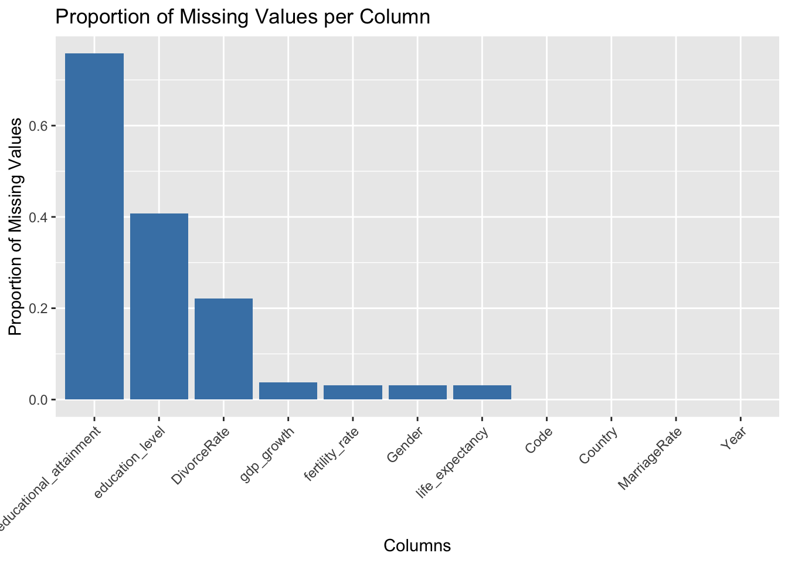

The data sources we have are pulled from multiple sources, including Organization for Economic Cooperation and Development (OECD), United Nations (UN), Statistical Office of the European Union (Eurostat), and World Bank Group. For OECD, UN, and Eurostat, they are responsible for the data collection and the data is collected from administrative data sources, such as civil registration and population and housing censuses. For the World Bank Group, they collect data by compiling from officially-recognized international sources. All of the data are either csv files or excel files. Data from OECD, UN, and Eurostat is updated annually, while the data from the World Bank group is updated quarterly. The dimensions for data collected from Eurostat, UN, OECD, and the World Bank group are 52 rows and 13 columns, 322 rows and 22 columns, 55 rows and 64 columns, and 68 columns and 397,936 rows, respectively. The main issue we have for the data is about organization. Since the data we have collected are pulled from multiple sources, it is rather hard to integrate these data into one file since each data has a different format and contains diverse information. Thus, organizing the data into suitable format for processing is a challenge for us. Lastly, our plan on importing the data is to download the files from the official website first, then transform them into the same format using Excel, and import the transformed files in R for further processing and analysis at last.
The above result shows how many missing value are there in each feature. After knowing the exact value, we can then doing visualization for better analyzing missing patterns.
Code
missing_values <-colSums(is.na(final_data))missing_data_df <-data.frame(Column =names(missing_values),MissingCount = missing_values)missing_proportion <- missing_values /nrow(final_data)missing_data_df$Proportion <- missing_proportionggplot(missing_data_df, aes(x =reorder(Column, -Proportion), y = Proportion)) +geom_bar(stat ="identity", fill ="steelblue") +labs(title ="Proportion of Missing Values per Column",x ="Columns",y ="Proportion of Missing Values") +theme(axis.text.x =element_text(angle =45, hjust =1))

We merged all relevant features with fertility rate into our final data set and first doing a bar plot visualizing porprotion of missing value in each column. Educational_attainment have the highest proportion of missing values, exceeding 50%. Columns like DivorceRate have a moderate proportion of missing values (around 20–40%). Columns such as gdp_growth, fertility_rate, Gender, life_expectancy, Code, Country, MarriageRate, and Year appear to have minimal or no missing values, making them more reliable for immediate use.
Code
gg_miss_fct(final_data, fct = Country) +labs(title ="Missing Values by Country",x ="Country",y ="Proportion of Missing Values") +theme_minimal() +theme(axis.text.x =element_text(angle =45, hjust =1))
We also check how missing value varies between different countries. As shown in the above plot, South Korea and Turkey has most missing value in life expectancy, gender, gdp, fertility rate, educational attainment, education level and divorce rate. For Year, MarriageRate, and Code, these variables show mostly purple cells, indicating that data is well-recorded with minimal or no missing values across all countries. For educational_attainment and education_level, they have a significant amount of missing data across many countries (as evident by the green and yellow cells). There is a mix of purple (no missing values) and green/yellow in divorce rate, indicating inconsistent data collection across countries.